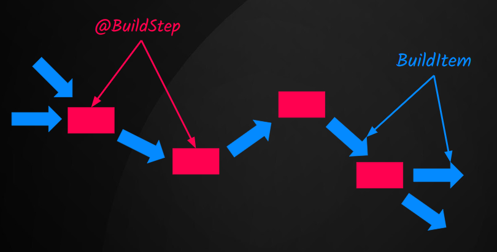

Developing a Quarkus Extension
TL;DR
This post demonstrates how to create a Quarkus extension that provides three features that:
- Notify an API regarding the application's
startingstatus; - Offer a implementation class created with Gizmo;
- Count the number of methods using
@GET,@POST,@PUT,@DELETEannotations using Jandex;
Why Quarkus extension?
Quarkus is both a framework and a build time augmentation toolkit. Its principal concept is "do as much as possible during build time instead of runtime", this concept is what helps Quarkus achieve a very low startup time and a smaller memory footprint.
Quarkus enables the creation of a Native Image through Graal VM, making it an excellent choice for Serverless systems that require minimal startup time and memory usage.
Additionally, Quarkus is a framework that has been captivating developers with its development experience. In the growth of internal developer platforms that aim for a developer-friendly experience, the experience that Quarkus provides is something to be considered.
Keeping in mind these initial concepts, let's try to answer some questions:
-
Some libraries perform actions at runtime (class path scanning, proxies, etc.) instead of build time. How can we adapt them to the Quarkus closed world?
-
Quarkus leverages the Graal SDK to generate a native application. However, it's essential to note that Graal VM does need some tweaks, and all executable code needs to be known before running. How can I adjust the code to be used as correct input for GraalVM?
-
Managing an Internal Developer Platform with over 100+ Quarkus applications in production, I need to implement a specific cross-cutting approach across all applications. What is the recommended method to achieve this?
Commonly, the answer for all questions (when you are using Quarkus) is: Create a Quarkus extension.
Quarkus CLI
The Quarkus CLI is an incredibly useful tool for working with Quarkus.
There are several ways to install the Quarkus CLI.
Installing Quarkus CLI
Refer to the official documentation for installation instructions.
With Quarkus CLI, we can create, build, deploy applications and perform essential tasks in a developer's day-to-day workflow. Be sure that you have it installed.
What will our extension do?
- Notify an API regarding the application's
startingstatus; - Offer a simple implementation class with Gizmo;
- Count the number of methods using
@GET,@POST,@PUT,@DELETEannotations using Jandex;
Note
All features are simple compared to real-world applications, but they serve as a great starting point to grasp and initiate your journey into the world of Quarkus extensions!
Creating the extension
Once the Quarkus CLI is installed, we will use it to create our useful extension.
The desired output should be similar to:
Detected layout type is 'standalone'
Generated runtime artifactId is 'quarkus-useful'
applying codestarts...
📚 java
🔨 maven
📦 quarkus-extension
🚀 devmode-test
🚀 extension-base
🚀 integration-tests
🚀 unit-test
-----------
👍 extension has been successfully generated in:
--> /home/cruz/github.com/mcruzdev/quarkus-useful
-----------
Navigate into this directory and get started: quarkus build
We are using the standalone layout, if you want to use the Quarkiverse layout execute the following command.
Quarkus extension structure
A Quarkus extension is divided in two modules, deployment and runtime.
-
The
deploymentmodule contains various components, such as build steps and build items, that play important roles in the application augmentation process. -
The
runtimemodule contains runtime code that are used bydeploymentmodule at build time.
It might seem odd: Why is runtime code executed and utilized by build-time code?
The reason is that runtime code is designed to be recorded for execution later. When you write this code, it's intended to be executed or used at a later stage.
Note
A deployment module must depend on the runtime module.
[Feature #1] Implementing the Notifier
What do we need here, and what is the expected behavior?
We want that, when the application start we want to send a HTTP request to a specific endpoint, notifying that the application is starting.
Use Quarkus Lifecycle instead
This is merely a sample, demonstrating the capabilities of a Quarkus extension. Avoid using it in production scenarios. For a limited number of applications, consider utilizing the Quarkus Lifecycle feature instead.
Creating our configuration
To call a REST service, you'll require the resource's URI. How can you retrieve this information or determine what the URI is?
We can do it into the code:
But, it is not a good practice. Quarkus aims to facilitate the creation of Cloud Native applications, and a good Cloud Native application uses (when necessary) 12 Factors - Configuration approach.
We need to make this configurable. I don't want to change the code and go through the entire release process (pull requests, approvals, pipelines, deployment, etc.) just to upload my extension with a new endpoint. To achieve this, Quarkus allows us to accomplish it using the Configuration feature. You simply need to create a POJO class and annotate it with @io.quarkus.runtime.annotations.ConfigRoot.
Defining a proprety as Optional
To define a configuration property as optional, you need to define the property as Optional<T>.
-
The element
namemeans the configuration property name. At the final the properties inside theUsefulConfigurationwill be the prefixquarkus.useful. -
The element
phaseindicates when this configuration will be visible.
ConfigPhase enum
BUILD_TIME- Values are read and available for usage at build time.BUILD_AND_RUNTIME_FIXED- Values are read and available for usage at build time, and available on a read-only basis at run time.RUN_TIME- Values are read and available for usage at run time and are re-read on each program execution.
Perfect, now that we have the configuration available, let's use it.
Calling the HTTP service
As mentioned previously, all code that executes at runtime should be in the runtime module.
Let's create the call to notify the starting event.
- Quarkus automagically injects the configuration POJO into the Recorder class.
- Quarkus uses Microprofile Config to access all provided configurations.
- The annotation
@Recorderindicates that the given type is a recorder that is used to record actions to be executed at runtime.
Perfectly, we have created our code that represents the code to be recorded. We will create now, the build step that will record this piece of code.
Recording the notify(UsefulConfiguration config) method
Now, we will create the class responsible for recording our runtime code.
As mentioned previously all code related to the build process should be in deployment module. If you see into deployment module, there is a class called QuarkusUsefulProcessor (generated by Quarkus CLI):
The Quarkus CLI generated a method with the @BuildStep annotation, indicating that this method is a step in the build process. Build step methods can produce or consume build items. In this case, it produces one build item called FeatureBuildItem.
The FeatureBuildItem is used to include the feature (quarkus-useful) to be printed at startup, for example:
Build steps and build items

-
Build steps are methods annotated with
@BuildStepannotation that performs a step in the build process; -
Build items are:
... the communication mechanism between build steps - Holly Cummins
-
Quarkus automatically determines correctly execution order and injects parameters (
BuildItem,BuildProducer, configuration classes, etc.); -
If you intend to utilize a build item through injection, remember that your build step will execute after the injected build item is produced;
-
There are initial, intermediate, and terminal state build steps. Custom extensions are commonly found in the intermediate state.
Creating the build step
Let's create the method in the QuarkusUsefulProcessor class that will handle recording our notifier.
What does the @Record annotation mean, and what is the value ExecutionTime.RUNTIME_INIT?
The ExecutionTime enum has two options: RUNTIME_INIT and STATIC_INIT.
Let's dive into some simple code examples to understand how these choices impact bytecode.
See more: How to see the generated bytecode
If you want to see the bytecode generated, into extension root dir runs:
mvn clean install- cd
integration-tests mvn clean package -DskipTests -Dquarkus.package.vineflower.enabled=truecat target/decompiled/generated-bytecode/io/quarkus/runner/ApplicationImpl.java
You will see that in the method doStart(String[] var1) there is a piece of code like it: (new QuarkusUsefulProcessor$recordNotifyStartingEventRecorder1857232657()).deploy(var2);
The option quarkus.package.vineflower.enabled=true tell to Quarkus decompile generated and transformed bytecode into the 'decompiled' directory.
Perfect, if you want to test the notifier, execute:
The output should looks like:
2024-01-06 19:17:34,449 WARN [dev.mat.qua.use.run.NotifyStartingEventRecorder] (Quarkus Main Thread) You are using the 'quarkus-useful' extension but the configuration property quarkus.useful.listenerUrl not defined
It happened because we forgot to set the quarkus.useful.listenerUrl property into application.properties file. Add the configuration property to application.properties and observe the result.
Mocking HTTP request
Use https://app.beeceptor.com/ this service to mock the HTTP request.
Now, that we have configured the quarkus.useful.listenerUrl, the output should looks like it:
2024-01-12 20:44:00,303 INFO [io.quarkus] (main) quarkus-useful-integration-tests 0.0.1-SNAPSHOT on JVM (powered by Quarkus 3.6.5) started in 0.980s. Listening on: http://0.0.0.0:8080
2024-01-12 20:44:00,304 INFO [io.quarkus] (main) Profile prod activated.
2024-01-12 20:44:00,304 INFO [io.quarkus] (main) Installed features: [cdi, quarkus-useful, resteasy, smallrye-context-propagation, vertx]
2024-01-12 20:44:01,107 INFO [dev.mat.qua.use.run.NotifyStartingEventRecorder] (ForkJoinPool.commonPool-worker-1) The quarkus-useful-extension gets the HTTP status code: 200
[Feature #2] Implementing our GreetingService interface
In some scenarios, offering a default implementation to our extension consumers becomes necessary, as seen in great libraries.
Essentially, in our case the user will inject a GreetingService interface, and the extension will provide a default implementation behind the scenes (using Gizmo  ).
).
The interface:
The user's code:
There are several ways to achieve this with Quarkus. One approach is implementing the interface and providing it by using CDI directly. However, let's get hands-on with Gizmo to get our initial experience with this tooling.
Gizmo
Gizmo is a library used by Quarkus to generate bytecode. If you are interested, there is an amazing video by the Quarkus Core team that explains the library in a better way. You can watch it here. We will provide a simple implementation with Gizmo, but is it possible do more interesting things with this library, like removing a bytecode to solve a specific problem.
Creating the GreetingService
Into the runtime module, let's create our interface:
Creating the implementation
Into the deployment module, let's create a new build step to generate our implementation.
@Record is not necessary
The @Record annotation isn't always mandatory. Sometimes, annotating the method solely with @BuildStep suffices to include it in the augmentation process. However, if you have the @Record annotation you need to have a @Recorder class injected in the method.
There are two ways to generate a Build Item, the first one is returning the Build Item in method, and the second one is using the class BuildProducer<T extends BuildItem>.
Let's continue with the implementation:
What this build step does ind depth? Let's see:
-
The
GeneratedBeanBuildItemis a build item having the bytecode that will be added as CDI bean (after in the augmentation process). -
The line "3" is an adapter that uses the
BuildProducer<GeneratedBeanBuildItem>injected intogenerateGreetingServicemethod. -
The line "6" we are indicating that the new class will implements the
GreetingServiceinterface. -
In the line "10" we are adding the annotation
jakarta.ws.rs.ApplicationPathto the new class. -
The
ClassCreatoris the class responsible for generating the bytecode, the instance ofGeneratedBeanGizmoAdaptoris used asClassCreator.classOutputproperty. -
When the method
ClassCreator#close()is called theClassCreatorwrites the bytecode inside deGeneratedBeanGizmoAdaptorinstance. Note that we are usingtry-with-resources. -
Behind the scenes the
GeneratedBeanGizmoAdaptoruses theBuildProducer<GeneratedBeanBuildItem>instance to produces the aGeneratedBeanBuildIteminstance.
See more: ClassCreator#close() implementation
See more: GeneratedBeanGizmoAdaptor#write() implementation
Using our hidden GreetingService implementation
Now, that we have the default implementation, let's use our integration-tests module to test it.
We need now to create a new resource called GreetingResource, to test our implementation:
Install the extension:
Go to the integration-tests module directory (cd integration-tests) and execute:
Open the browser and access the resource.
The output should shows: Hello from Quarkus Useful extension.
[Feature #3] Counting the number of CRUD methods
This feature helps us find and log methods annotated with @POST, @GET, @PUT, and @DELETE using Jandex. To log information at runtime, it's necessary to create a Recorder class within the runtime module.
Jandex
Jandex is a powerful Java annotation indexer and library that allows developers to efficiently analyze and index Java classes. It's particularly useful for Quarkus to perform annotation-based processing during build time.
ConsoleRecorder
Just as we did with our notifier in the first feature, let's create the code that will be recorded to be executed at runtime.
Creating the deployment code
Quarkus offers two build items (ApplicationIndexBuildItem, CombinedIndexBuildItem) that enable us to obtain an index for accessing annotations, implementations, interfaces, and more. In the ApplicationIndexBuildItem we have all application classes and in the CombinedIndexBuildItem we have all the application classes and all relevant classes from dependencies, etc.
- In lines "1-4", DotName instances are defined to represent JaxRS annotations within our codebase.
- At line "7", we specify that the recorded code will be executed within the static block.
- At line "8", Quarkus injects the
ApplicationIndexBuildItembuild item into our build step. - On line "13", we utilize the Jandex index to discover all annotations within the application.
- On line "21", a List
of messages is passed to our Recorder class method for use.
Testing our extension feature
Let's add a new method inside the QuarkusUsefulResource:
Now, we have two methods annotated with @GET annotation, and one annotatated with @POST annotation.
Let's build the extension:
Go to the integration-tests:
Execute the application:
The log should looks like it:
2024-01-12 20:08:28,985 INFO [dev.mat.qua.use.run.ConsoleRecorder] (Quarkus Main Thread) Your application has 1 method(s) annotated with jakarta.ws.rs.POST
2024-01-12 20:08:28,985 INFO [dev.mat.qua.use.run.ConsoleRecorder] (Quarkus Main Thread) Your application has 2 method(s) annotated with jakarta.ws.rs.GET
2024-01-12 20:08:28,985 INFO [dev.mat.qua.use.run.ConsoleRecorder] (Quarkus Main Thread) Your application has 0 method(s) annotated with jakarta.ws.rs.PUT
2024-01-12 20:08:28,985 INFO [dev.mat.qua.use.run.ConsoleRecorder] (Quarkus Main Thread) Your application has 0 method(s) annotated with jakarta.ws.rs.DELETE
References and resources
This provides a concise overview of the Quarkus extension. For in-depth information, refer to the comprehensive official resources dedicated to this subject:
- Quarkus in Action
- Writing Extensions
- Building My First Extension
- Writing Native Applications Tips
- Quarkus Insights #43: Writing Quarkus Extensions - Peter Palaga
- Why you're missing out if you're not making Quarkus extensions by Holly Cummins Georgios Andrianakis
- Quarkus Insights #52: Gizmo: Build-time Boost Your Extensions - Martin Kouba
Source code
If you'd like to view the entire code, you can access it here.
Thank you
That's all; thank you for reading! See you in the next post. Goodbye!